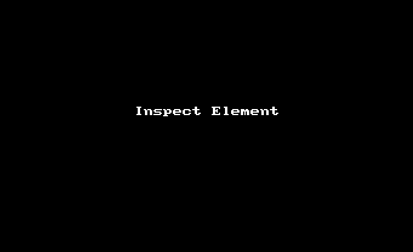
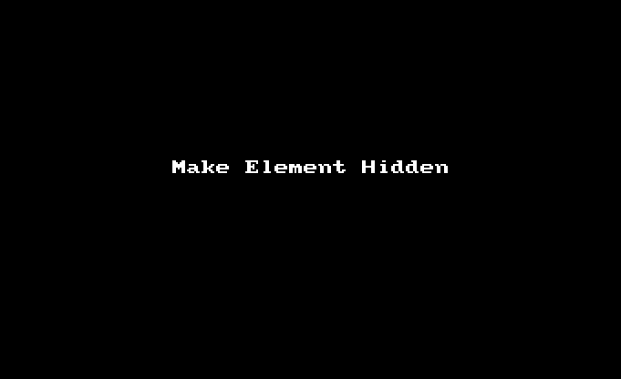
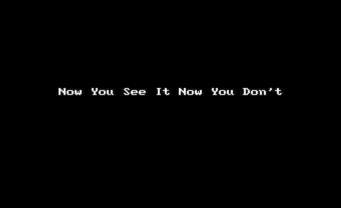

Knowledge is power. Let me give you some knowledge of computers.
Let us use that power to make this rabbit go away.

Put your mouse on the picture of the rabbit and push the right mouse button. You will see a list. Go to the thing on the list that says "Inspect Element."
These are "developer tools." These are the things people use to make websites.
In the left part of the Developer Tools you will see a bit of writing that is colored blue. This bit of writing is the rabbit. It is the rabbit because when you pushed "Inspect Element," you said to the computer, "I desire to see the bit of writing that made this be on this page."
Now we will make the rabbit go away.
Make certain the bit of writing that is the picture of the rabbit is coloured gray. Then go to the "style" window in the upper right of the Developer Tools. Double click in the "Style" window. In the "Style" window put the word "visibility". Push the tab key one time. Put the word "hidden" The style window will now look like this:
element.style {
visibility: hidden;
}
These special words only make it so that you are not able to see the rabbit. The rabbit is still there.
